CS184/284A Fall 2026 Homework 3 Write-Up
Names: Brian Chu
Link to webpage:
cs184.eecs.berkeley.edu/fa26
Link to GitHub repository:
cs184.eecs.berkeley.edu/fa26
Overview
In this homework we implemented the systems from path tracing to full rendering of 3d scenes. At each level we also implemented the methods along the way that make these algorithms computationally efficient. First we start with the path tracer, and then implement BVH (bounding volume hierarchy) to get rid of redundant costs which affect meshes especially as they get larger. Then, we compute direct lighting using Monte Carlo methods for light sampling the scene's hemisphere and then the light sources themselves. On top of that we put global illumination and compute light path bouncing, making that more efficient with the Russian Roulette method. At the final highest layer we implement adaptive sampling to lessen redundant sampling and its costs by checking pixel value convergence.
Overall I think this is an implementation in how to successfully make efficient (through different types of random sampling, probability checks and heuristics) rendering decisions for overall scenes so that they are “good enough” so to speak to convince us of their realisticness and fool our perception. Or in another way I think about it, it has us implement the math for what brute forcing rendering would look like, explains why it is too costly when scaled, and then at each stage how to cleverly through established best math practices make it look as equivalent to the fully processed render as possible while optimizing costs.
Part 1: Ray Generation and Scene Intersection
A path tracer needs to know, for every pixel, which direction the camera is looking through it. Ray generation answers that.
Camera Sensor Math
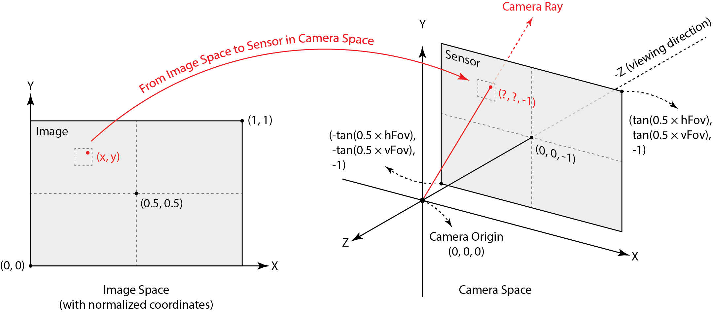
The camera model. In camera space, the camera sits at the origin and looks down the −Z axis. A rectangular virtual sensor lies on the plane z = −1. Its size comes from the field of view: its corners are at (±tan(hFov/2), ±tan(vFov/2), −1). The wider the field of view, the bigger the sensor, and the more of the scene the camera sees.
Intuitively, I think about as the amount I can see when trying different VR headsets or AR glasses. Also an adjustable setting in certain first person games. (Example. Quest3 FOV is 110 horizontal, 96 vertical, vision pro is estimated 90-100 degree horizontal and 96 degree estimated vertical)
Pixel Coordinate Math
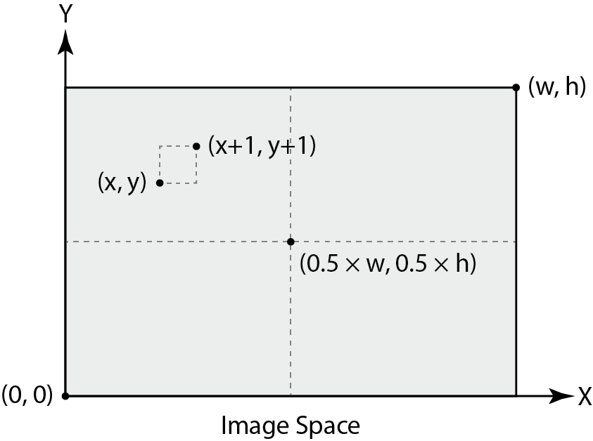
Choosing a point inside the pixel. In raytrace_pixel, the pixel (x, y) is the bottom-left corner of a one-unit square. For each sample, I add a random offset in [0, 1) from the sampler, which gives a random point inside the pixel. Random positions, rather than always the center, are what give antialiasing once the samples are averaged. I then divide by the image width and height to get normalized coordinates in [0, 1] × [0, 1], where (0, 0) is the bottom-left of the image and (1, 1) is the top-right.
Mapping the image point to the sensor. generate_ray maps the normalized coordinates (x, y) linearly onto the sensor:
sensor x = (2x − 1) · tan(hFov/2)
sensor y = (2y − 1) · tan(vFov/2)
sensor z = −1
Here 0 maps to the sensor’s minimum edge and 1 to its maximum edge. The field of view is stored in degrees, so it is converted to radians before calling tan.
Building the ray. The ray starts at the camera and passes through that sensor point, so its camera-space direction is just the sensor point itself. To get a world-space ray, I rotate that direction with the camera-to-world matrix c2w and normalize it, so the direction has length 1 and t measures true distance. The origin is already in world space, since it is the camera position pos. Only the direction needs rotating, because a rotation does not apply to a position that is already expressed in world coordinates. I also set the ray’s min_t to the near clip distance and max_t to the far clip distance, so anything closer or farther than those is ignored.
Using the ray. raytrace_pixel calls est_radiance_global_illumination on each ray to estimate the light arriving along it. The pixel’s final value is the average over all of its samples.
Triangle Intersection Algorithms
A camera ray is the set of points o + t·d, where o is the origin, d is the direction, and t is the distance along the ray. We want to know whether the ray passes through a triangle, and if so, at which t.
Any point inside a triangle with corners p1, p2, p3 can be written as p1 + b2·(p2 − p1) + b3·(p3 − p1). Here b2 and b3 are barycentric weights, and the third weight is b1 = 1 − b2 − b3. The point lies inside the triangle exactly when all three weights are non-negative.
The ray hits the triangle where the two expressions are the same point:
o + t·d = p1 + b2·(p2 − p1) + b3·(p3 − p1)
This is three linear equations, one each for x, y and z, with three unknowns: t, b2 and b3.
Möller Trumbore from lecture solves this system directly with Cramer’s rule, which can be written with cross and dot products. Like such:
e1 = p2 − p1 and e2 = p3 − p1 (the two triangle edges from p1)
s = o − p1 (the vector from the triangle corner to the ray origin)
s1 = d × e2 and s2 = s × e1
Then:
denominator = s1 · e1
t = (s2 · e2) / denominator
b2 = (s1 · s) / denominator
b3 = (s2 · d) / denominator
b1 = 1 − b2 − b3
If the denominator is nearly zero, the ray is parallel to the triangle’s plane and cannot hit it, so I return no hit.
Determining whether the hit counts:
Solving gives numbers, but three checks decide whether they represent a real hit:
1. Inside the triangle. b1, b2 and b3 must all be at least 0. The weights always add to 1, so a negative weight means the point is outside one of the triangle’s edges.
2. Valid distance. t must lie in [min_t, max_t]. This rules out hits behind the camera, hits closer than the near clip plane, and hits farther than something already found.
3. Nearest wins. When a hit is accepted, I set the ray’s max_t to t. Any later, farther hit then fails check 2, so after all primitives are tested, the nearest surface is the one that remains.
The two functions we have for intersecting are
has_intersection only answers yes or no, so it runs the test and, on success, updates max_t.
intersect does the same and also fills in the Intersection record:
t: the hit distance.
n: the surface normal, computed as b1·n1 + b2·n2 + b3·n3 from the three vertex normals and normalized. These are the same barycentric weights used to interpolate color in the rasterizer homework, and they give smooth shading across a mesh.
primitive: a pointer to this triangle.
bsdf: the surface material, from get_bsdf().
We do this because Möller Trumbore needs no precomputed plane equation. It also produces the barycentric weights as a by-product of finding t, and intersect needs those weights anyway to interpolate the normal, so the same computation serves both purposes.
Normal renders of small triangle count dae files
 Normal Rendered banana
Normal Rendered banana
|
 Normal rendered empty box.
Normal rendered empty box.
|
 Normal rendered spheres
Normal rendered spheres
|
Part 2: Bounding Volume Hierarchy
Normal renders of high triangle count dae files
|
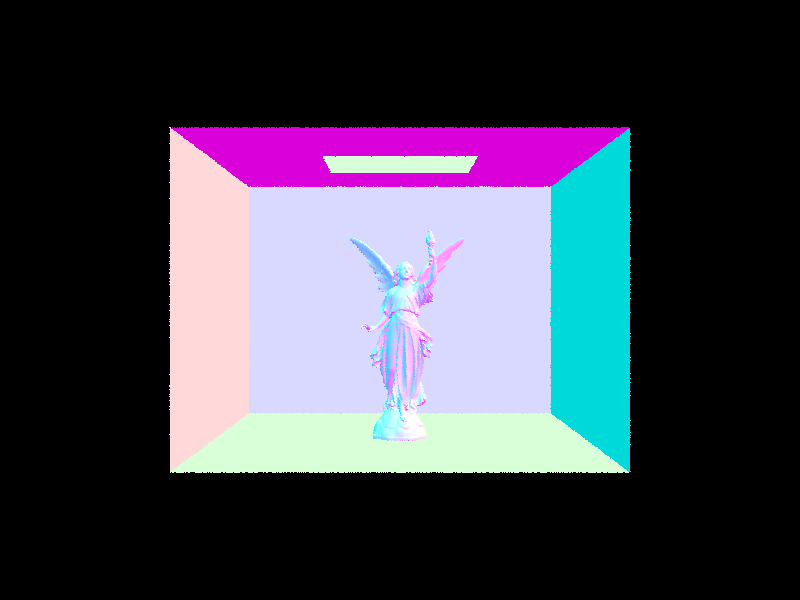
Lucy (the statue)
|
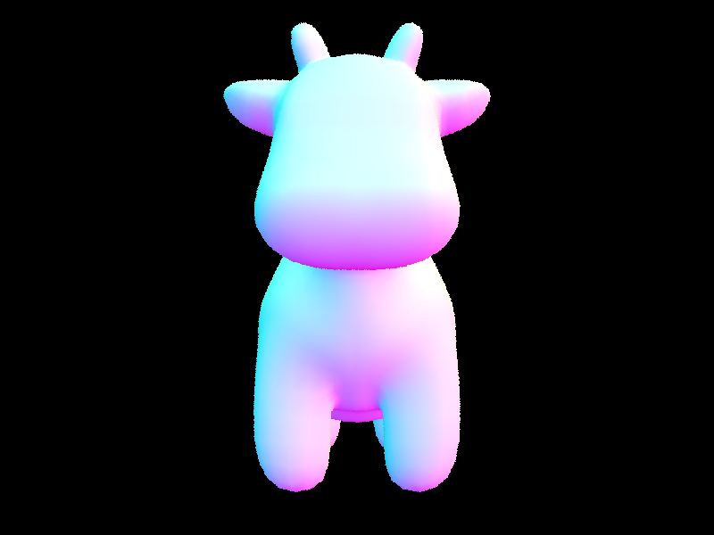
Cow (moo)
|
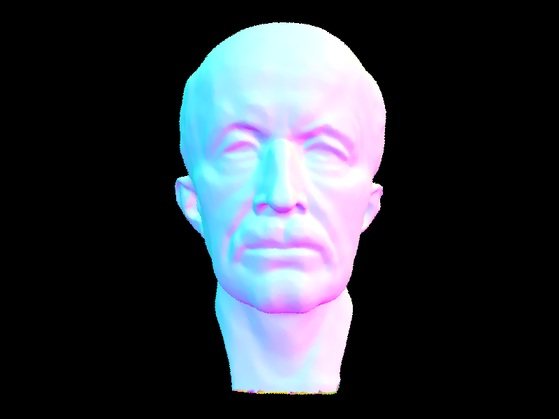
Max Planck
|
Part 3: Direct Illumination
Both direct lighting functions answer the same question: how much light arrives at the hit point straight from a light source, and how much of it is reflected toward the camera?
1. Local frame. At the hit point I build a coordinate system with the surface normal as the +z axis (o2w and its transpose w2o). In this frame, cos θ for any direction is simply its z component.
2. Outgoing direction. w_out is the direction back toward the camera, converted to the local frame. hit_p is the hit position in world space.
3. The estimator. The reflection equation is an integral over the hemisphere of L_i · f · cos θ. I estimate it by Monte Carlo: average L_i · f · cos θ / pdf over randomly chosen directions. Here f comes from DiffuseBSDF::f, which is albedo / π.
Uniform hemisphere sampling
Draw lights × ns_area_light directions uniformly on the local hemisphere. Each has a pdf of 1/(2π).
Convert each direction to world space with o2w and cast a ray from hit_p. The ray’s min_t is EPS_F so that it does not hit the surface it started on.
If the ray hits something that emits light, add emission · f · cos θ / pdf. If it hits anything else, that surface has zero emission, so it adds nothing.
Divide the sum by the number of samples.
The weakness is that directions are chosen blindly. For a small light, most rays miss it and contribute zero, so the estimate is noisy.
Light sampling
For each light, call sample_L. It picks a point on the light and returns its radiance, the world-space direction, the distance, and the pdf.
Convert the direction to the local frame. If its z component is not positive, the light is behind the surface and contributes nothing, so no ray is cast.
Cast a shadow ray from EPS_F to distance − EPS_F. The start offset avoids hitting the surface itself, and the end offset avoids hitting the light. If the ray hits anything, the point is in shadow and the sample contributes zero.
Otherwise add radiance · f · cos θ / pdf.
Average each light’s samples and sum over lights. A delta light (point or directional) is sampled only once, since every sample from it is identical.
Every ray is aimed at the light, so none is wasted. This also makes point lights renderable, which hemisphere sampling cannot do, because a random direction almost never hits a single point.
Images rendered in both implementations
|
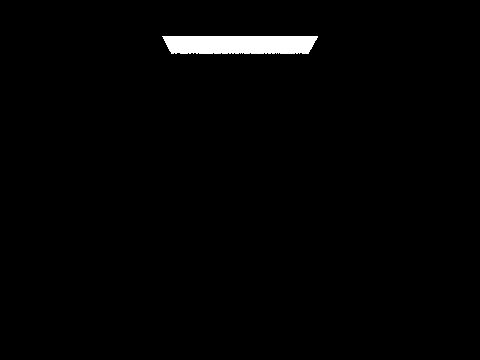
Zero bounce radiance on bunny
|
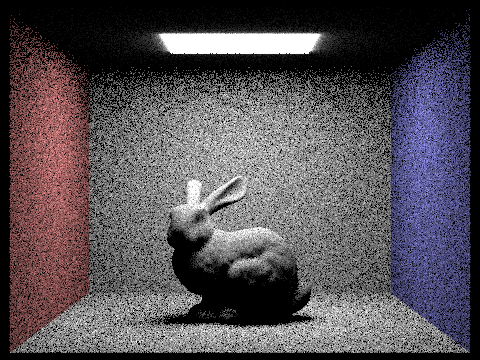
Uniform Hemisphere Sampling at 16 and 8
|
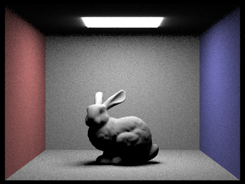
Uniform Hemisphere Sampling at 64 and 32
|
|
Importance sampling at 1 and 1
|
Importance sampling at 64 and 32
|
 Blank cow because of lack of point light sources
Blank cow because of lack of point light sources
|
|
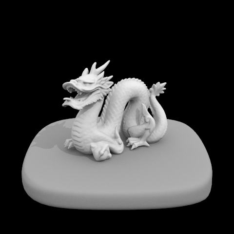
Direct lighting importance sampling of dragon
|
Soft shadows n light rays (for bunny)
The pattern is that with -l 1 the shadow edge is grainy, because each pixel sees the light from only one random point. The noise shrinks as -l grows, roughly with the square root of the count, so four times the rays halves the noise. By -l 64 the shadows look smooth.
|
1 light ray bunny
|
4 light rays bunny
|
|
16 light rays bunny
|
64 light rays bunny
|
Uniform hemisphere vs light sampling
Both methods converge to the same image, but light sampling reaches it with less noise. With hemisphere sampling, only the few rays that happen to hit the light contribute, so lit regions and shadows look grainyish even at a high sample count. With light sampling, every sample points at the light, so the only variation comes from which point on the light was chosen and whether something blocks it. At equal sample counts, its soft shadows are visibly smoother. Light sampling also handles point lights. The glow around the box light above the bunny looks different, because hemisphere sampling does not model the light’s directional falloff.
Part 4: Global Illumination
Global Illumination
Direct vs Indirect Illumination
Non accumulating mth bounce of light
Accumulated vs Unaccumlated Light Bouncing
Russian Roulette but for Lighting up Bunnies
Different # of samples per pixel
Part 5: Adaptive Sampling
|
Normal Rendered banana
|
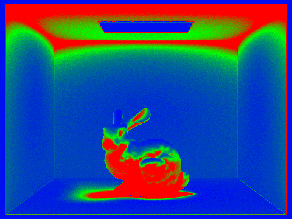
Adaptive Rate
|
|
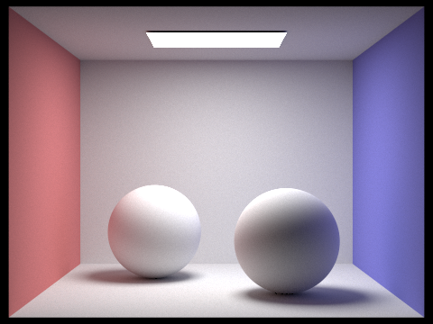
Normal Rendered banana
|
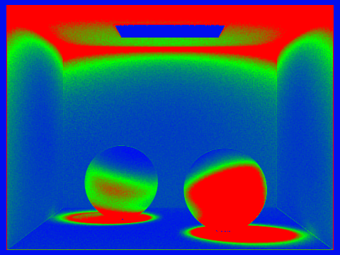
Adaptive Rate
|
AI assistance acknowledgement